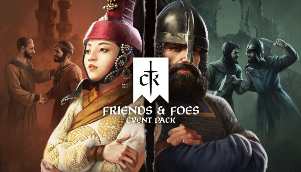
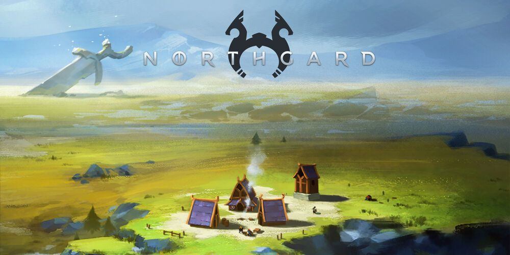

- اکشن
- ماجراجویی
- نقش آفرینی
- شبیه سازی
- استراتژیک
Crusader Kings III
بازی Crusader Kings III یک بازی خارقالعاده استراتژی، یک نقشآفرینی بزرگ و یک کلاس درس استادانه است که در جریان آن شاهد استفاده مناسب از سیستمهای موجود و ارائه آن در بهترین شکل ممکن هستیم.
Northgard Cross of Vidar
Northgard یک بازی در سبک شبیه سازی است و مخفی کاری است که توسط استودیو بازی سازی Shiro Games ساخته و برای کامپیوتر های شخصی منتشر شد
The Witcher 3

The Witcher 3 اثری نام آشنا و زیبا است در ژانر نقش آفرینی که روایتگر داستانی جذاب با گیمپلی خارق العاده می باشد. اگر اهل فیلم و سریال هم باشید، قطعا مجموعه سریال The Witcher را مشاهده کردید و تا حدودی با شخصیت ها و داستان آن آشنا هستید. این بازی دست کمی از سریال و آثار هنری ندارد.
Shadow of Mordor

Middle Earth Shadow of Mordor سرزمین میانی سایه موردور یکی از بازی های سبک اکشن,ماجرایی و جهان باز است که توسط Monolith Productions طراحی و ساخته شده و توسط کمپانی مشهور
Warner Bros برای پلتفرم PC به بازار عرضه گردید . این بازی در واقع پلی است که میان حوادث و اتفاقات The Hobbit و The Lord of the Rings زده شده است .